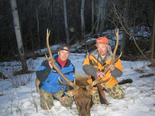
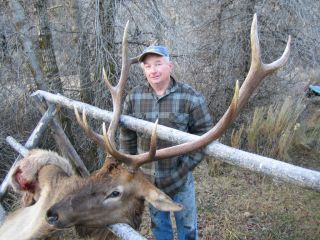

I have been making knives since 1985. My son brought home a book on knife making by David Boye and I really caught the fever.
My first knives were made from saw blades and ended looking a lot like David 's knives since I was using the same techniques as he was. I later found sources for good materials like 440C steel and started to develop my own designs and construction techniques.
I am a low production knife maker doing only about 4 knives a month and have been retired from my real job since 2004 so I am lucky that I don't have to make knives for a living. As a result I can work at a reasonable pace and have time to experiment with new blade materials and heat treating techniques.
I like to make fillet knives and am fortunate to have them in use by serious fishermen all over the world.
It took a while to figure out how to grind a long flexible blade and do the heat treating so they are hard enough to hold an edge but still tough enough to have good ductility.
I got into this by necessity. I was filleting a box of rockfish with my Grandfather looking on, we were talking, and I was not paying attention as I should have. While working on a Ling Cod I accidentally drove the tip of the knife into the cutting board and my hand slipped down onto the blade. I got a very deep cut on my index finger. The knife did not have a finger guard to prevent this.
From then I was looking for a fillet knife I could buy that had a finger guard and would hold a decent edge. I found a couple with a finger guard but the steel was way too soft to hold an edge. In the end I decided to try to make to make one myself. The first knife was made from 440C with an ivory micarta handle and a long finger guard. It worked great and I still use it once in a while. Learning to make knives is a long process. It’s like flying airplanes; you have to stay at it to stay good. I have spent endless hours in the shop trying to teach myself how to grind, heat treat and finish blades. I also have had the good fortune to get some help when I needed it to keep me going.
I would like to acknowledge those makers and friends who had the most influence. David Boye of course for the information in his book, Bill Herndon, who lived close at the time and showed me some hints on grinding and finishing, Wayne Goddard who encouraged me to do my own heat treating and showed me how to test edge holding by cutting manila rope. Finally PJ Tomes who encouraged me to start flat grinding and offered many time saving techniques.
I have to also mention Bob Loveless who gave me some pretty sharp (not a pun) critiques at the Pasadena Knife Expo one year. In the end he said he liked my fillet knives and encouraged me to keep making them. Many of my fellow knife makers and friends like Bill Harsey, Barry Gallagher, Rick Dunkerley, Devin Thomas, Ed Schemp and Tom Mayo have offered encouragement over the years and that helps to keep the interest alive. Ed Severson and Dick Barber, both very knowledgeable metallurgists provided valuable mentoring on heat treating the CPM steels. Mayanrd Meadows and his wife Jackie who are good friends and have used my hunting knives on big game in Alaska, Africa, and Australia have given me invaluable feedback on knife design, blade shape and steel performance.
I am now making knives at the rate of 4 to 5 per month and hope to continue at this rate for at least 10 more years. I also intend to get back to writing a few technical based articles on knife making each year. My shop is in a little town called Mokelumne Hill. My wife is a retired Chef so I get first hand feed back on kitchen knife performance. We are in the heart of the Gold Country here in Northern California. When not working in the knife shop I try to find time to fish in the Ocean and San Francisco Bay and ride dirt bikes on the trails in the area. I have been traveling, exploring and fishing in Baja since 1969 and try to get down there to fish and explore the desert whenever I can. Thanks also to all those who have my knives and who will have them in the future.